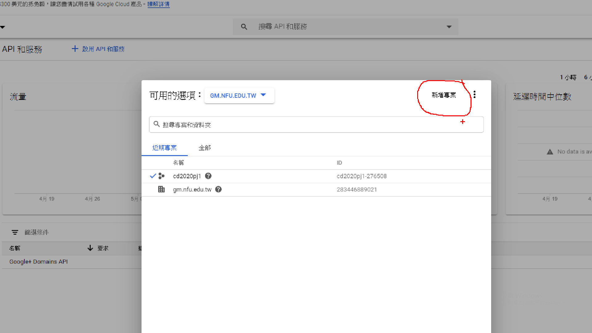
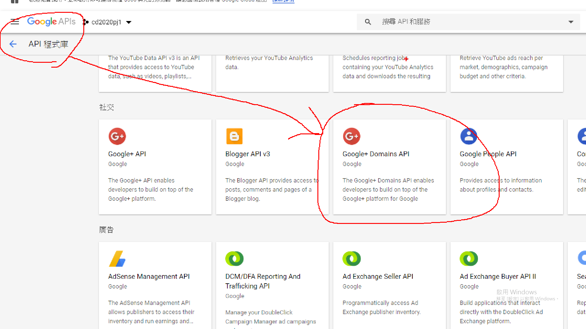
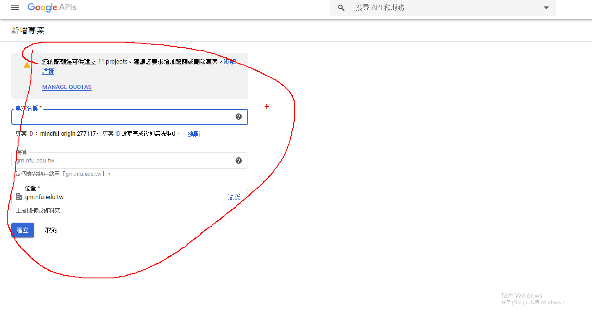
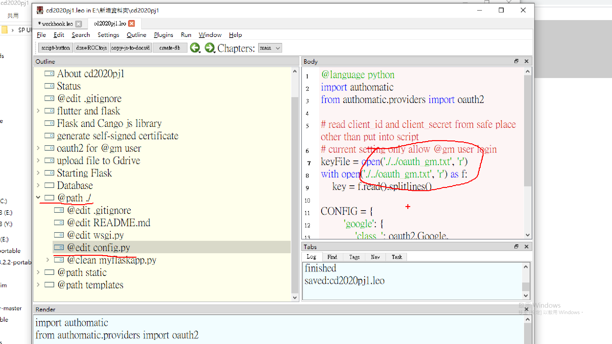
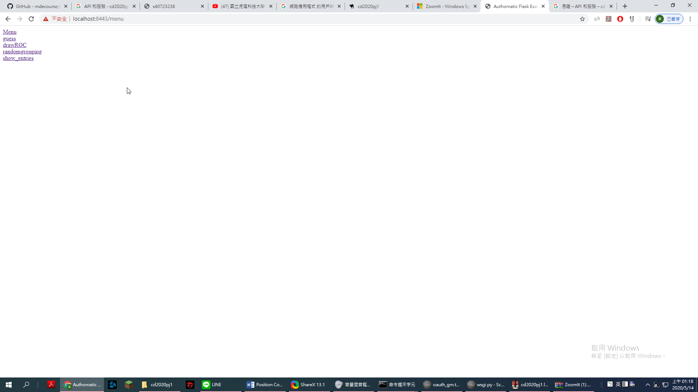
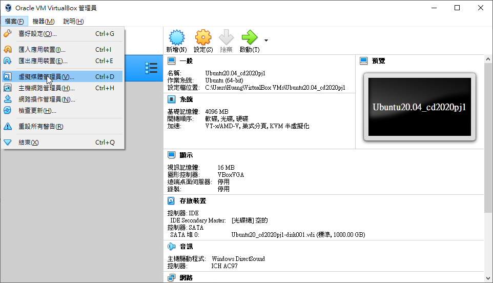
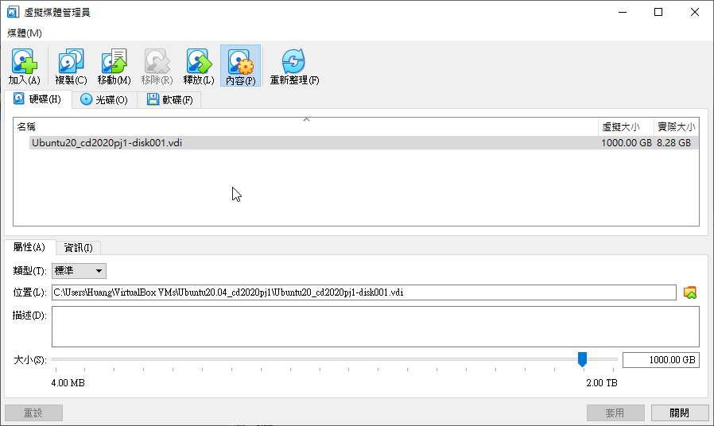

Week1~9 <<
Previous Next >> 分組作業
week10~17
w10
開會紀錄
w11
1.進入cd2020pj1
2.進入google的api設定網址並登入gm帳號
3.點選建立專案

4.git clone https://github.com/mdecourse/cd2020pj1.git
5.點選api服務再點Google+ Domains API建立

6.點憑證並建立憑證，建立後將用戶端id跟用戶端密碼複製到記事本並存在倉儲資料夾外
7.設定第一個url:https://localhost:8443，第二個url:https://localhost:8443/login/google/按儲存

8.開啟leo，打開cd2020pj1.leo，在@path ./@edit coonfig.py找到第7行key file =...將上下兩個都改成自己剛剛儲存憑證密碼的檔案名稱

9.在小黑窗打pip install authomatic
10.進入cd2020pj1打python wsgi.py就能開啟近端，畫面長這樣

開會直播
開會直播2
w12
分組作業
倉儲
網站
開會紀錄
w13開會紀錄
筆記:
虛擬主機都要使用vi指令編輯，因虛擬主機裡無法複製貼上故要下載共享文件filezilla，解壓縮後建立站台跟虛擬主機連線就可以共享文件了。
ipv4遠端控制
1.cmd打開小黑窗打ipconfig查自己ipv4的位址
2.將自己主機的前三個埠號改成自己的ip，打開ubuntu
3.開啟lxtermial，putty
4.putty/connection/ssh/x11打勾enable x11 fowarding跟輸入localhost:0.0之後open就能連線到虛擬主機
5.帳密都為kmol2020，輸入xterm&打開小白窗
6.進入cd2020pj1先git pull查看有無新版本，在cd docs/cmsimde
7.輸入vi wsgi.py，i編輯並將host:改成10.0.2.4在按esc退出:wq儲存
8.輸入python3 wsgi.py啟動，網址是https://自己的ipv4:17443
問題1:
用putty開啟的小白窗是連接到虛擬主機的，不是連接自己的電腦。
問題2:
在小白窗不能ctrl+c，那樣會被解讀成關閉網站，要老老實實的打好網址。
ipv6對外連線
問題:
不小心刪掉虛擬主機裡的cd2020pj1了，應該是失敗了。
w14開會
w15
問題:
想要重新做的時候在載入ubuntu時遇到名為E_INVALIDARG (0x80070057)的問題，這時候要到virtualbox的虛擬媒體媒體管理器刪除vdi的檔案


虛擬主機中coppeliasim模擬
1.virtualbox的設定/網路改成僅限網路介面卡
2.啟動ubuntu後數入密碼kmol2020
3.開啟lxterminal，輸入xterm&開啟小黑窗
4.使用ls查看當下資料夾有甚麼檔案，在依序cd coppeliasim4_rev4/cd CoppeliaSim_Edu_V4_0_0_Ubuntu18_04
5.使用./coppeliaSim.sh開啟coppeliaSim
6.開啟老師的檔案
使用putty連接虛擬主機進行小車模擬
1.將ubuntu網路改成nat將埠號設定成22，19999，8443
2.啟動後密碼輸入kmol2020
3.開啟LXterminal
4.開啟putty，如影片設定後open後帳號密碼輸入kmol2020再輸入xterm&開啟小白窗
5.如上個影片開啟coppeliasim後按模擬
6.下載老師的檔案(登入gm帳號)後將其中的car_model.py拉到編譯器按tool/go啟動模擬
ipv6遠端伺服控制
1.將控制台設定跟老師一樣
2.將虛擬主機全域埠號改成跟影片一樣
3.啟動ubuntu並開啟xterminal然後新cd tmp/cd2020pj1打git pull看有無更新
4.cd docs/cmsimde打sudo vi wsgi.py並打密碼kmol2020將host改成自己ipv6位址
5.打開lxlaunch跟putty，putty要名稱設定跟自己的位址一樣
6.open後輸入帳密kmol2020打xterm&打開小白窗
7.cd tmp/cd2020pj1/docs/cmsimde打python3 wsgi.py
8.網址是https://[自己的ipv6位址]:17443
w16
ipv6對外連線
1.打開ipv6的內容把位址改成2001:288:6004:17:2020:2:0:7238
2.cd /etc/，cd apt/apt.conf.d，輸入sudo vi proxy.conf 密碼是kmol2020
3.進去後按i輸入Acquire::http::Proxy "http://[2001:288:6004:17::53]:3128"; 打完後esc打:wq儲存
4.sudo apt install net-tools
5.cd /etc/,cd netplan打sudo vi 00-installer-config
6.將版面調整成
network:
ethernets:
enp0s3:
dhcp4: true
dhcp6: true
nameservers:
addresses:
- 2001:b000:168::11
version: 2
排版要完全一致
7.輸入ping6 2001:288:6004:17::254測試
8.將埠號輸入好
9.cd tmp 在打sudo vi oauth_scrum.txt，內容可以隨便打
10.cd tmp/cd2020pj1 sudo wsgi.py把host改成跟埠號一樣
11.輸入python3 wsgi.py
12.網址是https://[自己的ipv6]:3128
w17
ipv6連線個人倉儲
期末報告影片
Week1~9 <<
Previous Next >> 分組作業